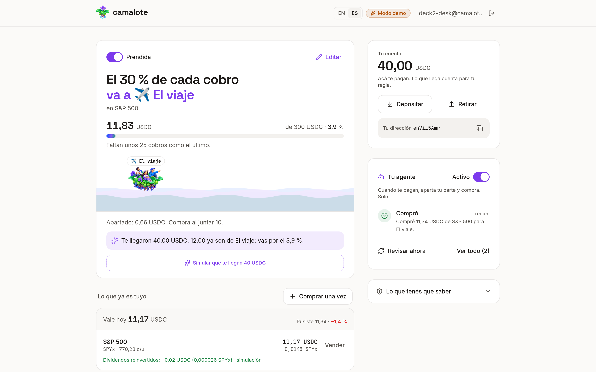
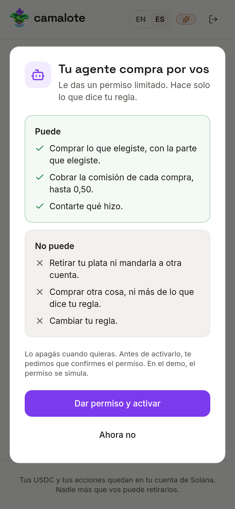

Para los que cobran en USDC. Apenas entra, antes de que la gastes.
camalote
Fernando · Corrientes, Argentina · camalote.vercel.app
El problema
Me pagan 400 USDC. A fin de mes invertí 0.
Soy freelancer en Argentina. Como millones de personas en el mundo, cobro de afuera en USDC, cuando me pagan. Mi plan siempre fue invertir lo que sobrara.
Día 3
Entran 400 USDC
Un cliente de afuera paga un trabajo.
Día 5
Alquiler
Lo primero que sale.
Día 12
Tarjeta y cuentas
Lo que queda se va achicando.
Día 30
Invertido: 0
No sobró. Nunca sobra.
Camalote · Colosseum - Track Superteam Argentina
2
Lo que entendí
El problema no es la plata. Es el momento.
Invertir lo que sobra
Llega al final del mes, cuando ya no hay nada. Y el plan de todos los meses el mismo día supone un sueldo que el freelancer no tiene.
Invertir al cobrar
Hay un solo momento en que siempre hay plata: cuando entra. Ahí se aparta tu parte, antes que el alquiler.
Camalote · Colosseum - Track Superteam Argentina
3
Camalote
Armás una regla una vez. Cada cobro la cumple.
Qué parte
El 10, el 20 o el 30 % de cada cobro.
Para qué
Una meta con nombre: el viaje, la compu, un colchón.
En qué
S&P 500, empresas antes de salir a bolsa o dólares que rinden.

Camalote · Colosseum - Track Superteam Argentina
4
Con Camalote
El mismo mes. Esta vez, 120 invertidos.
Día 3
Entran 400 USDC
El 30 % ya se invirtió para El viaje: 120 USDC.
Día 5
Alquiler
Lo pagás igual, con lo que queda.
Día 12
Tarjeta y cuentas
Igual que siempre.
Día 30
Invertido: 120
Sin acordarte de nada.
Una sola diferencia: tu parte sale primero, el mismo día que te pagan.
Camalote · Colosseum - Track Superteam Argentina
5
La automatización
Un agente de IA hace el trabajo por vos.
1
Se entera de que te pagaron
En segundos, a cualquier hora.
2
Aparta tu parte y la invierte
En lo que elegiste, y queda en tu cuenta.
3
Te cuenta qué hizo
«Compré 120 USDC de S&P 500 para El viaje.»
Vos le das el permiso, con límites. Solo puede invertir lo que dice tu regla. Nunca puede sacar ni mover tu plata. Lo apagás cuando quieras.

Camalote · Colosseum - Track Superteam Argentina
6
Por qué ahora
Las tres piezas recién existen juntas.
2x
crecieron en 2025 los pagos reales en stablecoins: sueldos, facturas y remesas. La plata ya llega en dólares digitales.
6x
creció el volumen de acciones tokenizadas en Solana: US$ 4.900 M en el primer semestre de 2026.
2026
los agentes pueden firmar dentro de un permiso acotado. Antes, había que acordarse y apretar el botón.
Fuentes: McKinsey y Artemis 2025 · volumen en Solana, H1 2026
7
Mercado
Hecho para cualquiera que cobre en USDC. Arranca en Argentina.
TAM · Mundo
US$ 390.000 M
en pagos reales en stablecoins en 2025: sueldos, facturas y remesas.
SAM · Latinoamérica
US$ 39.000 M
por año, si la región pesa lo mismo que en el resto de cripto: cerca del 10 %.
SOM · Argentina
US$ 7.800 M
por año cobran en stablecoins los freelancers que trabajan para afuera. Ahí arrancamos.
Meta del primer año: el 1 % de ese mercado pasando por una regla de Camalote.
Fuentes: McKinsey y Artemis 2025 · Chainalysis 2025 · Ministerio de Economía · iProUP
8
Competencia
Todos venden acceso. Nadie invierte al cobrar.
Opción
Invierte al cobrar
Meta con nombre
Sin custodia
Por compra
Camalote
Sí, solo
Sí
Sí
0,45 %, tope 0,50
Lemon, acciones
No
No
No
0,5 % + 0,5 %
Takenos
No
No
No
0 % en ETFs
Phantom
No
No
Sí
0,85 %
Comprar a mano en Solana
No
No
Sí
0,10 %
Con todos, vos te tenés que acordar de comprar. Ese es justo el paso que falla.
Comisiones publicadas al 13/09/2026 · Colosseum Copilot, 4.068 proyectos, al 29/09/2026
9
Modelo de negocio
Ganamos solo cuando tu regla compra.
0,45 %
por compra de acciones, nunca más de 0,50 USDC.
0,10 %
al poner dólares a rendir.
0
por vender o sacar. Sin suscripción ni spread escondido.
Es un negocio de volumen: cada cobro es una compra. La escala viene de las plataformas que pagan en USDC y ofrecen Camalote a quienes cobran.
Camalote · Colosseum - Track Superteam Argentina
9
Salida al mercado
Los primeros veinte, uno por uno.
1
Comunidades que cobran en USDC
Arrancamos en Superteam Argentina, donde se cobran bounties en USDC. Después, capítulo por capítulo, país por país.
2
Diez minutos con cada uno
«Dame diez minutos y tu próximo cobro invierte solo.»
3
Plataformas que pagan
Quien paga en USDC ofrece Camalote a quien cobra. Ahí está la escala.
Camalote · Colosseum - Track Superteam Argentina
10
Equipo
Construí lo que yo necesitaba.
Fernando, fundador. Desarrollador fullstack.
Cuatro años en Global Hitss haciendo streaming para Smart TV en Claro Video.
Fundó Tuneport: música donde los fans ganan curando artistas nuevos.
Busco cofundador o cofundadora de crecimiento, para llevar Camalote a comunidades y plataformas que pagan en USDC.
Camalote · Colosseum - Track Superteam Argentina · github.com/Beor18
11
Mi próximo cobro ya tiene destino. El tuyo también puede.
Pagate primero.
Sin acordarte nunca más.
Probalo
camalote.vercel.app
Código
github.com/Beor18/camalote
Tracción
Números chicos y reales.
[__]
reglas armadas
[__]
cobros reales que pasaron por la regla
[__]
USDC invertidos, con comprobante
Al 12/10/2026. Cada número sale de la base y se puede verificar en la red.
Hecho en el hackathon, del 14/9 al 12/10
Metas con nombre y cuánto falta, en cobros.
Dólares que rinden como destino.
Rediseño y onboarding de tres pasos.
El agente que cumple la regla solo.
La regla y lo apartado guardados en la base.
Camalote existe desde agosto de 2026. Lo anterior está declarado y en el historial del repo.